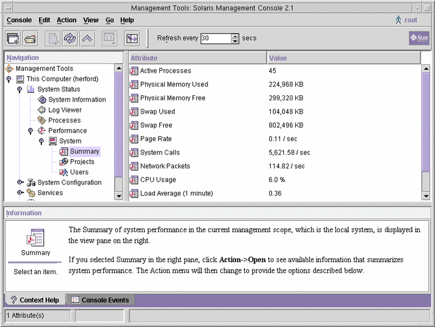

Previous
Previous
Resource Control Functionality in the Solaris Management Console
This chapter describes the resource control and performance monitoring features in the Solaris Management Console. Only a subset of the resource management features can be controlled using the console.
You can use the console to monitor system performance and to enter the resource control values shown in Table 15-1 for projects, tasks, and processes. The console provides a convenient, secure alternative to the command-line interface (CLI) for managing hundreds of configuration parameters that are spread across many systems. Each system is managed individually. The console's graphical interface supports all experience levels.
The following topics are covered.
Using the Console (Task Map)
Task | Description | For Instructions |
|---|---|---|
Use the console | Start the Solaris Management Console in a local environment or in a name service or directory service environment. Note that the performance tool is not available in a name service environment. | Starting the Solaris Management Console in System Administration Guide: Basic Administration and Using the Solaris Management Tools in a Name Service Environment (Task Map) in System Administration Guide: Basic Administration |
Monitor system performance | Access the Performance tool under System Status. | |
Add resource controls to projects | Access the Resource Controls tab under System Configuration. |
Console Overview
Resource management functionality is a component of the Solaris Management Console. The console is a container for GUI-based administrative tools that are stored in collections called toolboxes. For information on the console and how to use it, see Chapter 2, Working With the Solaris Management Console (Tasks), in System Administration Guide: Basic Administration.
When you use the console and its tools, the main source of documentation is the online help system in the console itself. For a description of the documentation available in the online help, see Solaris Management Console (Overview) in System Administration Guide: Basic Administration.
Management Scope
The term management scope refers to the name service environment that you choose to use with the selected management tool. The management scope choices for the resource control and performance tools are the/etc/project local file, or NIS.
The management scope that you select during a console session should correspond to the primary name service that is identified in the /etc/nsswitch.conf file.
Performance Tool
The Performance tool is used to monitor resource utilization. Resource utilization can be summarized for the system, viewed by project, or viewed for an individual user.
Figure 15-1 Performance Tool in the Solaris Management Console How to Access the Performance Tool
How to Access the Performance Tool
The Performance tool is located under System Status in the Navigation pane. To access the Performance tool, do the following:
- Click the System Status control entity
in the Navigation pane.
The control entity is used to expand menu items in the Navigation pane.
- Click the Performance control entity.
- Click the System control entity.
- Double-click Summary, Projects, or Users.
Your choice depends on the usage you want to monitor.
Monitoring by System
Values are shown for the following attributes.
Attribute | Description |
|---|---|
Active Processes | Number of processes that are active on the system |
Physical Memory Used | Amount of system memory that is in use |
Physical Memory Free | Amount of system memory that is available |
Swap Used | Amount of system swap space that is in use |
Swap Free | Amount of free system swap space |
Page Rate | Rate of system paging activity |
System Calls | Number of system calls per second |
Network Packets | Number of network packets that are transmitted per second |
CPU Usage | Percentage of CPU that is currently in use |
Load Average | Number of processes in the system run queue which are averaged over the last 1, 5, and 15 minutes |
Monitoring by Project or User Name
Values are shown for the following attributes.
Attribute | Short Name | Description |
|---|---|---|
Input Blocks | inblk | Number of blocks read |
Blocks Written | oublk | Number of blocks written |
Chars Read/Written | ioch | Number of characters read and written |
Data Page Fault Sleep Time | dftime | Amount of time spent processing data page faults |
Involuntary Context Switches | ictx | Number of involuntary context switches |
System Mode Time | stime | Amount of time spent in the kernel mode |
Major Page Faults | majfl | Number of major page faults |
Messages Received | mrcv | Number of messages received |
Messages Sent | msend | Number of messages sent |
Minor Page Faults | minf | Number of minor page faults |
Num Processes | nprocs | Number of processes owned by the user or the project |
Num LWPs | count | Number of lightweight processes |
Other Sleep Time | slptime | Sleep time other than tftime, dftime, kftime, and ltime |
CPU Time | pctcpu | Percentage of recent CPU time used by the process, the user, or the project |
Memory Used | pctmem | Percentage of system memory used by the process, the user, or the project |
Heap Size | brksize | Amount of memory allocated for the process data segment |
Resident Set Size | rsssize | Current amount of memory claimed by the process |
Process Image Size | size | Size of the process image in Kbytes |
Signals Received | sigs | Number of signals received |
Stopped Time | stoptime | Amount of time spent in the stopped state |
Swap Operations | swaps | Number of swap operations in progress |
System Calls Made | sysc | Number of system calls made over the last time interval |
System Page Fault Sleep Time | kftime | Amount of time spent processing page faults |
System Trap Time | ttime | Amount of time spent processing system traps |
Text Page Fault Sleep Time | tftime | Amount of time spent processing text page faults |
User Lock Wait Sleep Time | ltime | Amount of time spent waiting for user locks |
User Mode Time | utime | Amount of time spent in the user mode |
User and System Mode Time | time | The cumulative CPU execution time |
Voluntary Context Switches | vctx | Number of voluntary context switches |
Wait CPU Time | wtime | Amount of time spent waiting for CPU (latency) |